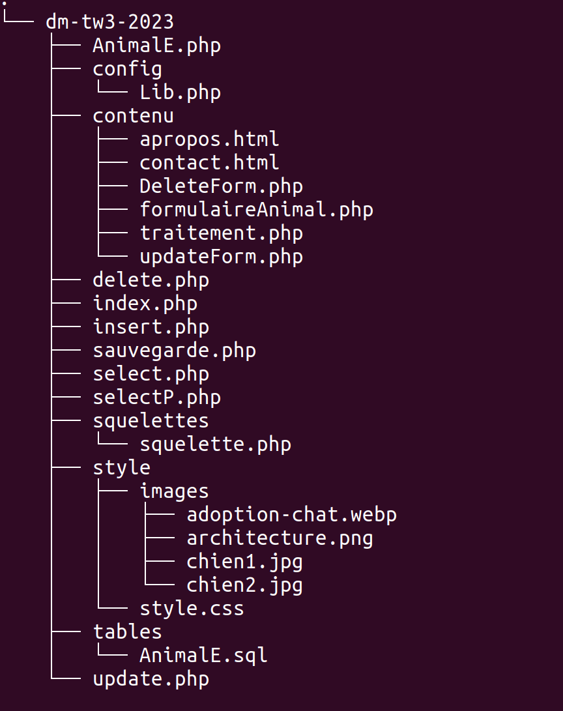

À propos de moi
- Nom : BEDJOU
- Prénom : CELINA
- N° Etudiant : 22112538
- Groupe TP 3A
À propos de mon site
J'ai conçu un site web dédié à l'adoption de chats et de chiens.
J'ai mis en place une interface d'administration qui permet d'ajouter,
de supprimer, de modifier et de visualiser des chiens ou des chats,
ainsi que d'autres options que je détaillerai plus tard. Pour les
utilisateurs, j'ai créé un formulaire de demande d'adoption et un moyen
de contacter les propriétaires d'animaux pour organiser une rencontre.
J'ai réussi à lier l'interface utilisateur à l'interface admin via un
système d'e-mails et j'ai laissé cette fonctionnalité dans le projet meme si ce n'est pas demander.
Le site fournit également des informations sur les animaux
disponibles pour adoption, y compris des photos et des descriptions
détaillées.
site est très simple et facile à manipuler. Il est entièrement réactif (résponsive 100%), toutes les fonctionnalités, qu'elles soient de base ou supplémentaires, ont été intégrées.
Liste des points réalisés
1-Réalisation de base
Contenu de mes objets
- IdP : identifiant unique de chaque animal (type : int)
- Nom : nom de l'animal (type : varchar)
- Espece : espèce à laquelle appartient l'animal (chien, chat) (type : varchar)
- Race : race de l'animal (type : varchar)
- Genre : genre de l'animal (mâle ou femelle) (type : varchar)
- Age : âge de l'animal (type : int)
- DateN : date de naissance de l'animal (type : date)
- NumeroT : numéro de téléphone du propriétaire de l'animal (type : varchar)
- Adresse : adresse du propriétaire de l'animal (type : varchar)
- ImageContent : contenu de l'image de l'animal (stocké sous forme binaire) (type : blob)
- ImageType : type de l'image de l'animal (jpeg, jpg) (type : varchar)
- Nom/Race/Age/NumeroT représenter par des inputs par contre Espece(chat,chiens)/Genre(male,femelle) par des balises select puis options .
- Arborescence de mon site .
- .
- Liste d'animaux, affichables indépendamment avec une Possibilité de pagination.
- Création d'animaux => Bouton Ajouter un nouveau animal .
- Modification d'animaux => Bouton Update
- Utilisation d'une classe pour la manipulation d'animaux =>AnimalE.php
- Suppression d'animaux => Bouton Delete
- Visualisation des details de chaque animal avec une petite déscription + ses infos .
- Gestion de la BD avec PHP => la table AnimalE
2-Compléments
- Filtrer la liste des animaux via un champ de recherche genre (soit féminin ou masculin) ou un champ de recherche espece(soit chat ou chien) ou filtrer selon les deux ou meme temps .
- Modifier l'ordre d'affichage de la liste (tri par date, ou par nom)
- Tri décroissant/croissant par nom et décroissant/croissant par date
- pagination de la liste (ne montrer que 3 animaux par page)
- Illustrer un animal en uploadant une image .
- Une page qui contient Un formulaire de contact coté utilisateur pour contacter(envoyé un email avec php)
les responsables d'adoption + Une map pour localisé le lieu de cette associations ou refuges .
- Site web responsive avec @media screen(Toute les pages sont responsives)
- 3 page principale Accueil,A propos,Contact sans oublie les pages d'ajout/modification/suppression/visualisation
- Réalisation des pages avec Html Css
3-Signaler
- Pages Valides HTML
- Documentation réaliser
4-Gestion des erreurs
- Prévoir que l'internaute se trompe.
- affichage Erreur nom ou race .... non valide.
- Rajout de plusieurs fonctions dans Lib.php comme verifAgeValide(age),verifie_nom_prenom(nom/prenom/race),...ect
- Vérifier la validité de l'image si ce n'est pas .jpg ou .jpeg affichage Erreur de chargement de fichier(format uniquement .jpeg .jpg)
- Si le fichier télecharger a la place de l'image est .zip ou autre Erreur de chargement de fichier
- une interface qui entraîne le moins d'erreurs possible
- Explication précisément et clairement de erreur.
- Possibilité de corriger ses erreurs